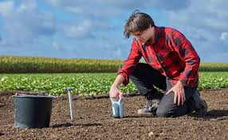

Coltivare provides innovative solutions and trusted products to empower the farming industry.
See how our services can help modernize and grow your agricultural operations.

On-site digital consultation with precision agriculture tools.
Soil health analysis and sensor-based testing.

Drone-based crop surveillance for yield monitoring.
Learn more about farming regulations and resources from the Indiana State Department of Agriculture .